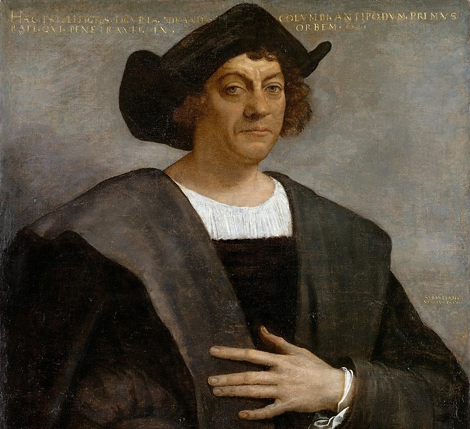
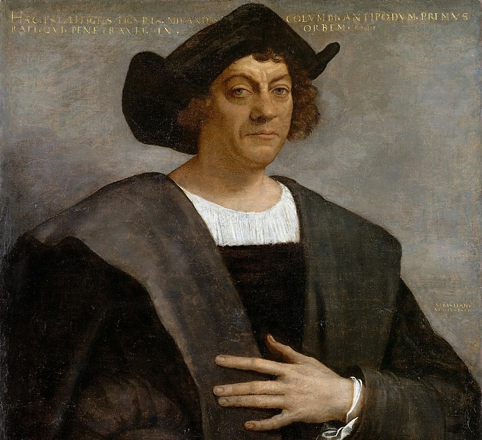
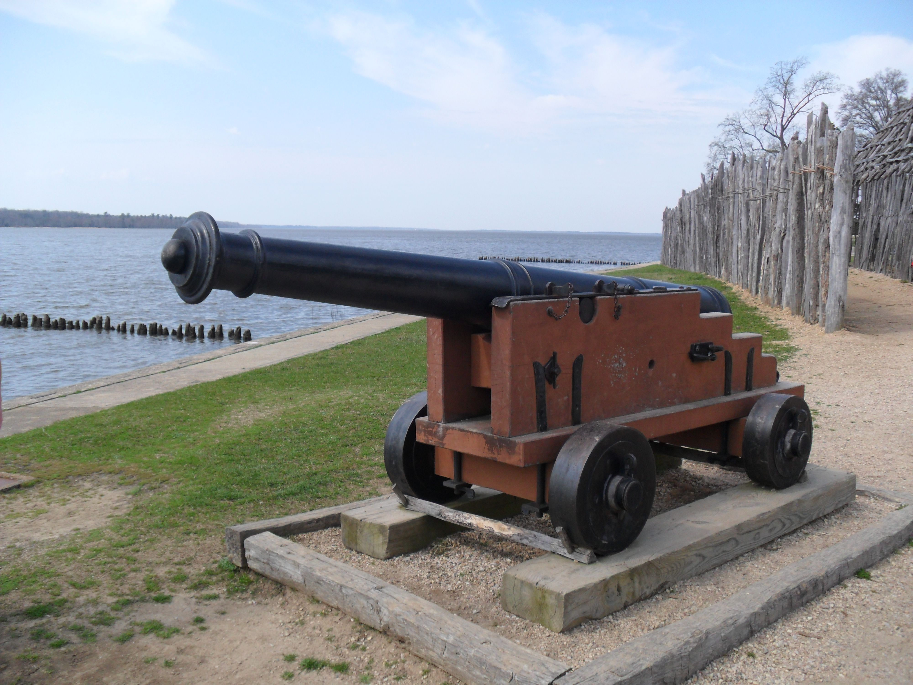
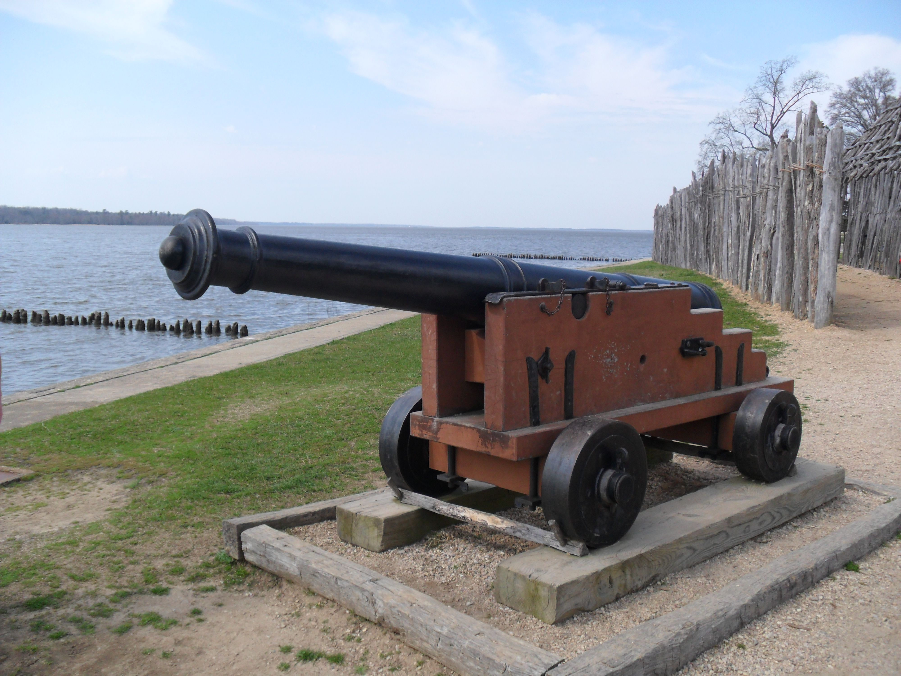

Amercia's Dawn

About 2.4 Million years ago the Earth was experiencing some major changes known as the Ice Age. Gigantic ice sheets and glaciers would be formed during the Ice Age, known as land bridges.
The land bridges connected previously isolated landmasses and facilitated the migration of various organisms and people between continents. The most notable land bridge formed during this period was the Bering Land Bridge, connecting what are today Russia and Alaska.


Nomadic groups from Asia made the daring journey across this bridge, gradually spreading throughout the continent. These intrepid travelers were the ancestors of the first Native Americans.


As these early natives spread out, they developed diverse cultures, each uniquely adapted to its environment. The indigenous societies of North America can be broadly grouped into cultural regions: the Arctic, the Subarctic, the Northeast, the Southeast, the Plains, the Southwest, the Great Basin, California, the Northwest Coast, and the Plateau.
For instance, the Inuit people of the Arctic built homes from snow and hunted seals, while the tribes of the Southwest, like the Hopi and Zuni, developed irrigation systems to grow corn in arid environments. The Plains tribes, like the Lakota and Cheyenne, became expert buffalo hunters, making use of every part of the animal.

The period from 800 to 1500 AD was marked by the rise and fall of great Native American civilizations. The Pueblo peoples of the Southwest built impressive cliff dwellings and cultivated complex agricultural systems. Meanwhile, in the Mississippi River Valley, the Mississippian culture erected enormous earthen mounds and created intricate artworks.
In the 15th century, the Iroquois Confederacy, also known as the Haudenosaunee, was formed in the Northeast. This union of five (later six) tribes is one of the earliest examples of a democratic system, significantly predating the United States.
 

 



The story of America's discovery begins with Christopher Columbus. Columbus, an Italian explorer, was sponsored by the Spanish monarchs Ferdinand and Isabella to find a new sea route to Asia. In 1492, he sailed west with three ships and landed in the Bahamas, marking a pivotal moment in world history. While Columbus believed he had found a new route to the East Indies, he had, in fact, arrived in what Europeans would come to call the 'New World'.
Following Columbus, other European explorers, including Amerigo Vespucci, for whom America is named, began to realize that these lands discovered were not part of Asia, but an entirely different continent. Throughout the 16th century, explorers from various European nations sailed to the Americas, mapping the coastlines and making contact with indigenous peoples.

The 17th century saw the beginning of permanent European settlement in what would become the United States. Over the coming centuries, the English, Spanish, French, and others would establish more colonies, leading to the formation of the United States.
In the early 1600s, the 'New World' was still a relatively unknown place to Europeans, full of potential and mystery. It was in this context that Jamestown, Virginia, the first permanent English settlement in North America, was established in 1607. Jamestown was a commercial venture by the Virginia Company, an English firm that planned to make money by sending settlers to America to find gold and silver and by establishing a trade route to Asia.
A little more than a decade later, in 1620, a group of English Puritans known as Pilgrims sailed on the Mayflower and established Plymouth Colony in present-day Massachusetts. Seeking religious freedom, these Pilgrims had a challenging start. However, with the help of local Wampanoag tribe, they were able to survive and, in 1621, they celebrated a successful harvest with a feast that would later be known as the first Thanksgiving.


Throughout the 1600s, other English colonies were established along the Atlantic coast. These would become the 'Thirteen Colonies,' including New Hampshire, Massachusetts Bay, Rhode Island, Connecticut, New York, New Jersey, Pennsylvania, Delaware, Maryland, Virginia, North Carolina, South Carolina, and Georgia. Each had its unique characteristics and development. Some were founded for religious freedom, others for business ventures, and still others as penal colonies.
The settlers had to adapt to new environments and create sustainable ways of life. They learned to grow new crops, such as tobacco, which became a profitable export for colonies like Virginia. However, this prosperity came at a price, as settlers began to rely on the forced labor of enslaved Africans and indentured servants to cultivate these labor-intensive crops.

The European settlers' arrival had profound impacts on the Native American tribes living in these areas. There were periods of both peaceful coexistence and violent conflict. While some Native American tribes traded and shared agricultural techniques with the newcomers, others resisted the encroachment on their lands, leading to a series of conflicts.